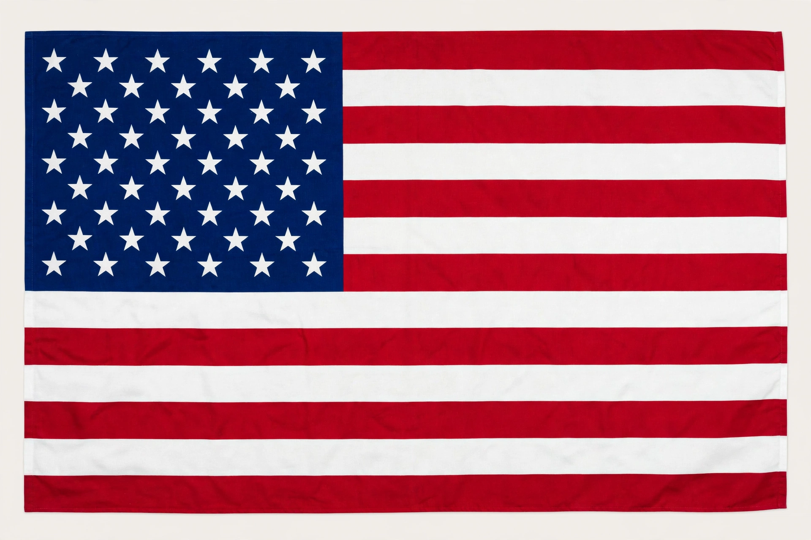

| United States of America | |
 Flag of the United States | |
| Capital | Washington, D.C. |
|---|---|
| Largest city | New York City |
| Government | Federal presidential republic |
| Independence | 4 July 1776 (declared, from Great Britain) |
| Population | approx. 340 million |
| Area | 9.8 million km² (3rd/4th largest country) |
| Currency | United States dollar (USD) |
The United States of America (USA or U.S.), commonly known as the United States or America, is a country located primarily in North America. It consists of 50 states, a federal district (Washington, D.C.), five major unincorporated territories, and numerous smaller islands. With about 340 million people, it is the third-most populous country in the world, and it has the world's largest economy by nominal GDP.
Indigenous peoples inhabited the continent for thousands of years before European colonisation began in the 16th and 17th centuries. Thirteen British colonies on the Atlantic coast declared independence in 1776 and defeated Britain in the Revolutionary War. The Constitution of 1787 created a federal republic that still operates today. During the 19th century the United States expanded across the continent through purchase, negotiation, and war, and fought a civil war (1861–1865) that ended slavery. In the 20th century the U.S. emerged from two world wars as a superpower, and after the Cold War with the Soviet Union it stood as the world's sole superpower.
The federal government has three branches: Congress (legislature), the President (executive), and the Supreme Court (judiciary). Politics is dominated by two parties, Democrats and Republicans. States retain broad powers over areas such as education, policing, and property law.
The country spans climates from arctic Alaska to tropical Hawaii and Florida, with the contiguous states between the Atlantic and Pacific oceans. The U.S. economy is a mixed capitalist system leading in technology, finance, and higher education; the dollar is the world's primary reserve currency. The United States is a founding member of the United Nations, NATO, the World Bank, and the IMF.